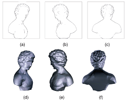
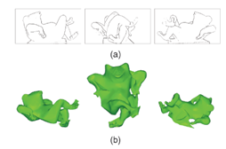

| about me | curriculum vitae | research | demos | courses |
Differential Geometry Based Shape Reconstruction from Image Curves  In this paper, the duality in differential form is developed between a 3D primal surface and its dual manifold formed by the surface's tangent planes, that is, each tangent plane of the primal surface is represented as a four-dimensional vector that constitutes a point on the dual manifold. The iterated dual theorem shows that each tangent plane of the dual manifold corresponds to a point on the original 3D surface, that is, the "dual" of the "dual" goes back to the "primal". This theorem can be directly used to reconstruct 3D surface from image edges by estimating the dual manifold from these edges. This study results in the robust differential dual operator. We argue that the operator makes good use of the information available in the image data by using both points of intensity discontinuity and their edge directions; we provide a simple physical interpretation of what the abstract algorithm is actually estimating and why it makes sense in terms of estimation accuracy; our algorithm operates on all edges in the images, including silhouette edges, self occluding edges, and texture edges, without distinguishing their types (thus, resulting in improved accuracy and handling locally concave surface estimation if texture edges are present). Experiments with both synthetic and real images demonstrate that the operator is accurate, robust to degeneracies and noise, and general for reconstructiong free-form objects from occludiong edges and texture edges detected in calibrated images or video sequences.
Publications:
|
Last updated on Feb. 10, 2010